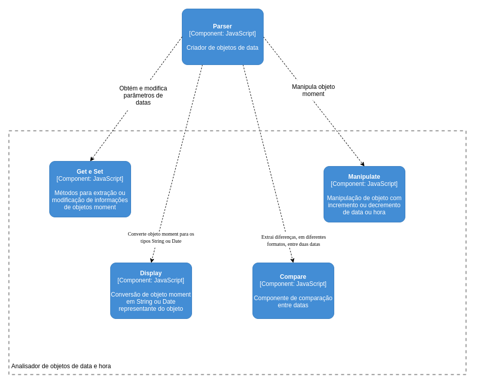
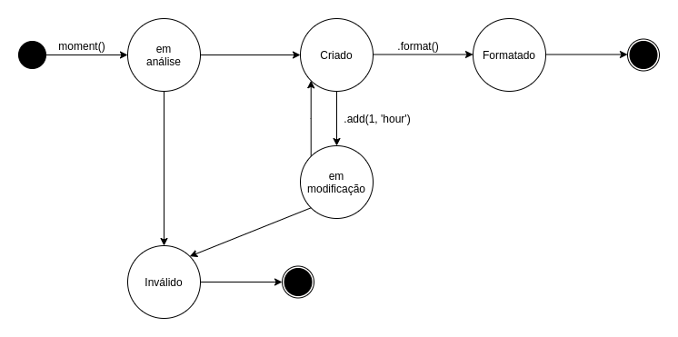

Moment Js
Este é um documento explica aspectos da arquitetura de uma das mais conhecidas bibliotecas JavaScript para manipulação de data e hora. O Moment torna a tarefa de manipulçação de data mais simples para o desenvolvedor.
Autores
Este documento foi produzido por Paulo Dantas.
- Matrícula: 115211312
- Contato: paulo.dantas@ccc.ufcg.edu.br
- Projeto documentado: https://github.com/moment/moment/
Descrição Arquitetural – Moment
Este documento descreve parte da arquitetura do projeto Moment. Essa descrição foi baseada principalmente no modelo C4.
Descrição Geral sobre o Moment
O Moment tem como objetivo disponibilizar ao desenvolvedor ferramentas para a criação e manipulação de datas em projetos JavaScript. Ele dispõe de um conjunto de funções que tem como objetivo auxiliar o trabalho do desenvolvedor, fazendo com que o trabalho com objetos do tipo Date se torne mais simples.
O Serviço de manipulação de datas do Moment
Objetivo Geral
Criar objetos do tipo Date que são facilmente convertidos, formatados e manipulados. Proporcionando, deste modo, que o desenvolvedor escreva códigos mais simples e concisos.
Objetivos Específicos
Auxiliar no desenvolvimento de projetos que manipulam datas, a partir da criação de objetos mutáveis que são simples de serem trabalhados.
Contexto
O Moment é um pacote que possui diversas ferramentas para manipulação de datas. Tornando mais simples a construção de datas e a sua conversão para diferentes formatos. Deste modo, ele não utiliza nenhuma API externa, fazendo utilização apenas do sistema operacional na qual está sendo utilizado.
Na criação de um objeto moment, o construtor extrai a data do sistema operacional na qual está inserido. Deste modo, permite a utilização do moment em sistemas offline e em qualquer plataforma.

Containers
A principal funcionalidade do Moment Js é a criação e manipulação de datas, mas, além disso, ele também apresenta um módulo para internacionalização e um módulo que é responsável pela criação de objetos de duração, que são representantes de períodos de tempo. Tais containers são mostrados no diagrama de container abaixo.

Analisador de objetos de data e hora
O container analisador de objetos de data e hora é responsável por criar um objeto que empacota uma data. Além disso, ele possui diversas ferramentas para incrementar, decrementar ou converter este objeto, tendo em vista que estes objetos do moment são mutáveis.
i18n
O container de internacionalização é responsável por configurar o ambiente para a qual o moment será utilizado. Com ele é possível estabelecer qual a localização geográfica do sistema e o idioma default utilizado, além de permitir a visualização de meses e dias da semana no idioma estabelecido.
Analisador de objetos de duração
Já o container representante da análise de objetos do tipo duração possui a função de criar objetos que representam períodos de tempo. Com eles é possível realizar conversões entre diferentes unidades de tempo (exemplo: minutos, segundos, horas) e manipular estes objetos.
Componentes
O principal container do moment é o de análise de objetos de data e hora, por este motivo ele terá um foco maior e seus componentes estão representados na imagem abaixo. Neste container é onde ocorre a criação dos objetos de data e a manipulação dos mesmos. O container de análise de data é composto por 5 módulos, são eles: Parser, Get and Set, Manipulate, Display e Compare. Estes serão descritos a seguir.

Parser
O componente de Parser é responsável por criar os objetos que representam data e hora. A partir dele que os métodos de manipulação e conversão são disponibilizados.
Get and Set
O componente Get and Set é composto por um conjunto de métodos que possibilita a modificação e obtenção de parâmetros pontuais de um objeto. Por exemplo, é através deste componente que pode-se modificar data ou hora de um objeto moment, assim como obter essas informações do mesmo objeto.
Manipulate
Semelhante ao componente de Get and Set, o componente Manipulate também é responsável por realizar modificações em objetos criados pelo Parser. A diferença é que os métodos disponibilizados pelo Manipulate não realizam modificações nos objetos de forma direta. O Manipulate pode adicionar ou remover horas, minutos, dias, meses, de forma muito mais prática. O desenvolvedor pode deixar a cargo do componente o cálculo de conversão de data ao ser retirado 1 mês, por exemplo, do dia informado.
Display
O componente Display é responsável pelas conversões dos objetos moment para diferentes formatos, como por exemplo: String, JSON, Date, dentre outros. Com ele o moment pode converter seus objetos para o formato Date, para assim serem salvos em um banco de dados. Além disso, pode converter datas para o formato String, para ser apresentado ao usuário.
Compare
Por fim, o componente Compare é responsável por fazer comparações entre diferentes datas. Assim, ele disponibiliza mecanismos para informar se uma data está a frente de outra e se duas datas, construídas a partir de diferentes formatos, são iguais. Além disso, é com esse componente que é possível verificar se uma String pode ser utilizada para construir um objeto moment.
Código
Nesta etapa não faremos diagramas que apresentam detalhes da implementação. Faremos isso mais adiante.
Visão de Informação
Como mencionado anteriormente os objetos de data moment são mutáveis, e é este princípio que o diagrama de estados abaixo apresenta. Inicialmente o objeto moment recebe como parâmetro uma String ou uma data, e a partir deste ponto ele se encontra em estado de análise. Logo após a análise dos parâmetros o moment vai decidir se os parâmetros informados podem representar uma data, se sim o objeto vai para o estado de criado, caso contrário ele se torna inválido e não poderá mais ser utilizado. Com o objeto em estado de criado ele pode ser modificado, através dos componentes Setter, Compare e Manipulate. Neste ponto ele se encontra no estado de “Em modificação”, caso os parâmetros informados para a sua modificação sejam válidos ele retorna para o estado de Criado e estará disponível para utilização futura, caso contrário ele se tornará inválido e sua vida útil irá acabar. Por fim este objeto pode ser formatado, a partir do componente Display, e assim convertido para um objeto do tipo String ou Date, acabando, deste modo, sua vida como objeto moment.
